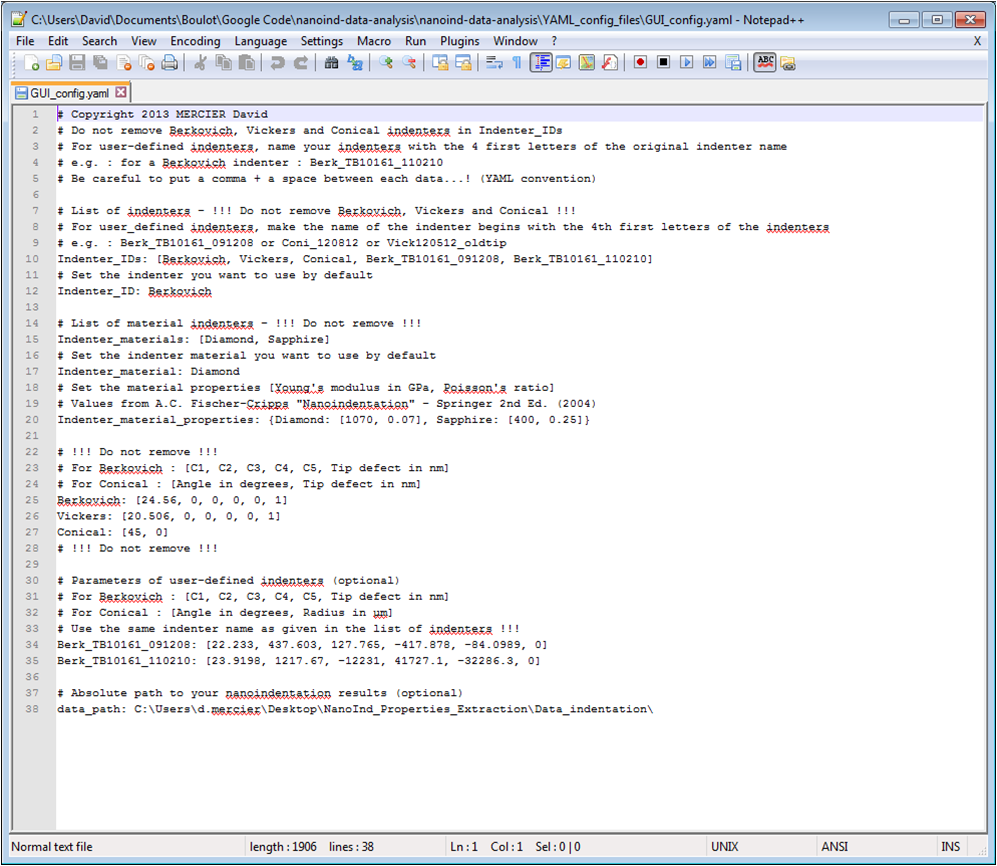

Visit the YAML website for more informations.
Visit the YAML code for MATLAB.
⇒ You need first to download YAML functions.
⇒ Then, you need to create (or update) the YAML configuration file in order to use MATLAB GUI.
⇒ This YAML configuration file provides indenter's information and a path on your computer to
select more easily your data.
How to create your YAML configuration file ?
- A YAML configuration file is given as an example in the YAML folder.
You can download this file
here.

- Make a copy of this YAML configuration file in the YAML folder
- Open your YAML config. file and fill it:
- Write your Indenter_ID(s) (e.g. : Conical indenter, Berk_TB10161_091208, ...);
- Write indenter's properties(e.g. : Berk_TB10161_091208: [22.233, 437.603, 127.765,
-417.878, -84.0989, 0]).
- Write the (absolute) path for the folder where you store your indentation data.
N.B. : Be careful to put a comma + a space between each data...! (YAML convention)
N.B. : Use # in the beginning of the line to add comments.
N.B. : For user-defined indenters, make the name of the indenter begins with the 4th first letters of the indenters.
N.B. : Do not remove standard indenters !
Return to the Main Menu.
{kind=link}